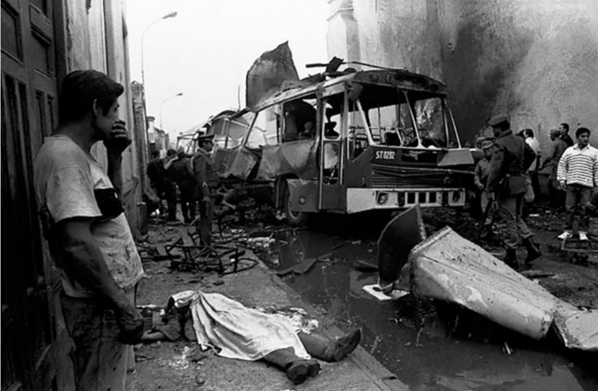
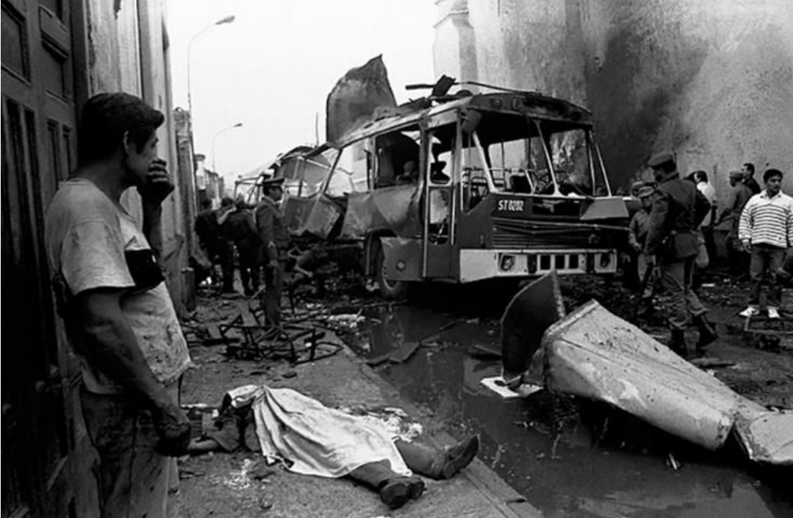

El conflicto armado interno en el Perú
El conflicto armado interno en el Perú (1980–2000)
Obra publicada con Licencia Creative Commons Reconocimiento Compartir igual 4.0

Obra publicada con Licencia Creative Commons Reconocimiento Compartir igual 4.0